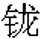
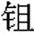

——寄《涛声》编辑的一封信
编辑先生：
我常常看《涛声》，也常常叫“快哉！”但这回见了周木斋先生那篇《骂人与自骂》[124]，其中说北平的大学生“即使不能赴难，最低最低的限度也应不逃难”，而致慨于五四运动时代式锋芒之销尽，却使我如骨鲠在喉，不能不说几句话。因为我是和周先生的主张正相反，以为“倘不能赴难，就应该逃难”，属于“逃难党”的。
周先生在文章的末尾，“疑心是北京改为北平的应验”，我想，一半是对的。那时的北京，还挂着“共和”的假面，学生嚷嚷还不妨事；那时的执政，是昨天上海市十八团体为他开了“上海各界欢迎段公芝老大会”[125]的段祺瑞先生，他虽然是武人，却还没有看过《莫索理尼传》。然而，你瞧，来了呀。有一回，对着请愿的学生毕毕剥剥的开枪了[126]，兵们最爱瞄准的是女学生，这用精神分析学来解释，是说得过去的，尤其是剪发的女学生，这用整顿风俗[127]的学说来解说，也是说得过去的。总之是死了一些“莘莘学子”。然而还可以开追悼会；还可以游行过执政府之门，大叫“打倒段祺瑞”。为什么呢？因为这时又还挂着“共和”的假面。然而，你瞧，又来了呀。现为党国大教授的陈源先生，在《现代评论》上哀悼死掉的学生，说可惜他们为几个卢布送了性命；[128]《语丝》反对了几句，现为党国要人的唐有壬先生在《晶报》上发表一封信，说这些言动是受墨斯科的命令的。这实在已经有了北平气味了。
后来，北伐成功了，北京属于党国，学生们就都到了进研究室的时代，五四式是不对了。为什么呢？因为这是很容易为“反动派”所利用的。为了矫正这种坏脾气，我们的政府，军人，学者，文豪，警察，侦探，实在费了不少的苦心。用诰谕，用刀枪，用书报，用煅炼，用逮捕，用拷问，直到去年请愿之徒，死的都是“自行失足落水”，连追悼会也不开的时候为止，这才显出了新教育的效果。
倘使日本人不再攻榆关，我想，天下是太平了的，“必先安内而后可以攘外”[129]。但可恨的是外患来得太快一点，太繁一点，日本人太不为中国诸公设想之故也，而且也因此引起了周先生的责难。
看周先生的主张，似乎最好是“赴难”。不过，这是难的。倘使早先有了组织，经过训练，前线的军人力战之后，人员缺少了，副司令[130]下令召集，那自然应该去的。无奈据去年的事实，则连火车也不能白坐，而况平日所学的又是债权论，土耳其文学史，最小公倍数之类。去打日本，一定打不过的。大学生们曾经和中国的兵警打过架，但是“自行失足落水”了，现在中国的兵警尚且不抵抗，大学生能抵抗么？我们虽然也看见过许多慷慨激昂的诗，什么用死尸堵住敌人的炮口呀，用热血胶住倭奴的刀枪呀，但是，先生，这是“诗”呵！事实并不这样的，死得比蚂蚁还不如，炮口也堵不住，刀枪也胶不住。孔子曰：“以不教民战，是谓弃之。”[131]我并不全拜服孔老夫子，不过觉得这话是对的，我也正是反对大学生“赴难”的一个。
那么，“不逃难”怎样呢？我也是完全反对。自然，现在是“敌人未到”的，但假使一到，大学生们将赤手空拳，骂贼而死呢，还是躲在屋里，以图幸免呢？我想，还是前一着堂皇些，将来也可以有一本烈士传。不过于大局依然无补，无论是一个或十万个，至多，也只能又向“国联”报告一声罢了。去年十九路军[132]的某某英雄怎样杀敌，大家说得眉飞色舞，因此忘却了全线退出一百里的大事情，可是中国其实还是输了的。而况大学生们连武器也没有。现在中国的新闻上大登“满洲国”[133]的虐政，说是不准私藏军器，但我们大中华民国人民来藏一件护身的东西试试看，也会家破人亡，——先生，这是很容易“为反动派所利用”的呵。
施以狮虎式的教育，他们就能用爪牙，施以牛羊式的教育，他们到万分危急时还会用一对可怜的角。然而我们所施的是什么式的教育呢，连小小的角也不能有，则大难临头，惟有兔子似的逃跑而已。自然，就是逃也不见得安稳，谁都说不出那里是安稳之处来，因为到处繁殖了猎狗，诗曰：“趯趯毚兔，遇犬获之”[134]，此之谓也。然则三十六计，固仍以“走”为上计耳。
总之，我的意见是：我们不可看得大学生太高，也不可责备他们太重，中国是不能专靠大学生的；大学生逃了之后，却应该想想此后怎样才可以不至于单是逃，脱出诗境，踏上实地去。
但不知先生以为何如？能给在《涛声》上发表，以备一说否？谨听裁择，并请
文安。
罗怃顿首。一月二十八夜。
再：顷闻十来天之前，北平有学生五十多人因开会被捕，可见不逃的还有，然而罪名是“借口抗日，意图反动”，又可见虽“敌人未到”，也大以“逃难”为是也。
二十九日补记。
注 释
[123] 本篇最初发表于1933年2月11日上海《涛声》第二卷第五期，署名罗怃。原题为《三十六计走为上计》。
[124] 周木斋（1910—1941） 江苏武进人，当时任上海大东书局编辑并从事写作。他的《骂人与自骂》，载《涛声》第二卷第四期（1933年1月21日），其中说：“最近日军侵占榆关，北平的大学生竟至要求提前放假，所愿未遂，于是纷纷自动离校。敌人未到，闻风远逸，这是绝顶离奇的了。……论理日军侵榆，……即使不能赴难，最低最低的限度也不应逃难。”又说：“写到这里，陡然的想起五四运动时期北京学生的锋芒，转眼之间，学风民气，两俱丕变，我要疑心是‘北京’改为‘北平’的应验了。”榆关，即山海关，1933年1月3日被日军占领。
[125] “上海各界欢迎段公芝老大会” 段祺瑞（字芝泉）在“九一八”后被聘为国难会议委员，1933年1月24日去上海时，上海市商会等十八个团体于2月17日为他举行欢迎会。
[126] 指三一八惨案。参看本卷第254页注〔6〕。
[127] 整顿风俗 段祺瑞政府曾多次颁行这类政令，如1925年8月25日发布的“整顿学风令”；1926年3月6日，西北边防督办张之江致电段祺瑞，主张“男女之防”“维风化而奠邦本”，段政府复电表示“嘉许”，并着手“根本整饬”。
[128] 陈源于三一八惨案发生后，在《现代评论》发表《闲话》，称爱国学生是被人利用，自蹈“死地”，还说所谓“宣传赤化”的人是“直接或间接用苏俄金钱”（见1926年5月8日《现代评论》第三卷第七十四期的《闲话》）。下文所说唐有壬的言论，参看本卷第115页注〔9〕。
[129] “必先安内而后可以攘外” 蒋介石在1931年11月30日国民党政府外长顾维钧宣誓就职会上的“亲书训词”中提出：“攘外必先安内，统一方能御侮。”（见1931年12月1日《中央日报》）此后，它成为国民党政府一贯奉行的积极反共，消极抗日的政策。
[130] 副司令 指张学良。他在1930年6月被任命为国民党政府陆海空军副司令。
[131] “以不教民战，是谓弃之” 语出《论语·子路》。
[132] 十九路军 原为国民革命军第十一军，1930年改编为十九路军，蒋光鼐任总指挥，蔡廷锴任副总指挥兼军长。1932年“一·二八”事变时，该军驻防上海，奋起抗击日军的进攻，5月初按中日《淞沪停战协定》撤离上海。
[133] “满洲国” 日本帝国主义侵占我东北后于1932年3月在长春扶植的傀儡政权。
[134] “


兔，遇犬获之” 语出《诗·小雅·巧言》。趯趯，跳跃的样子；毚兔，狡兔。